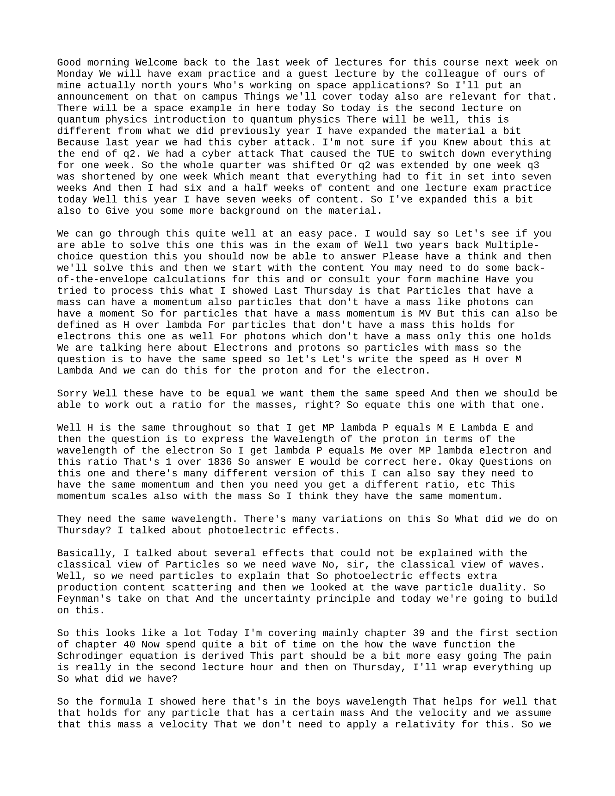
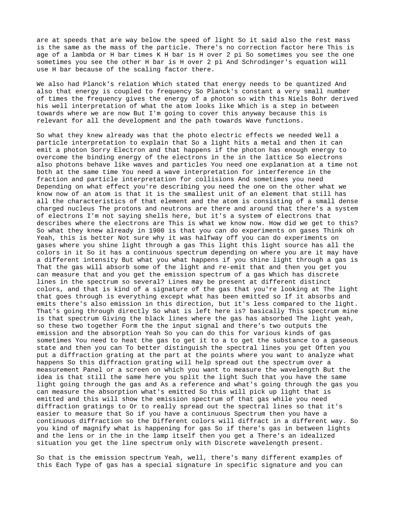
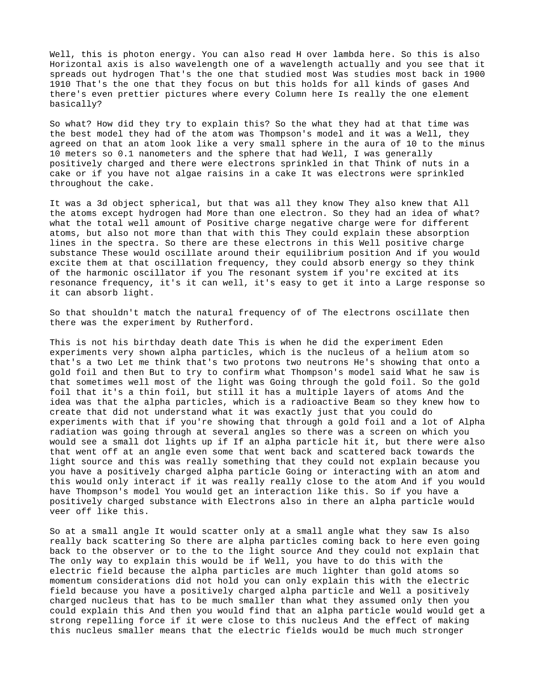
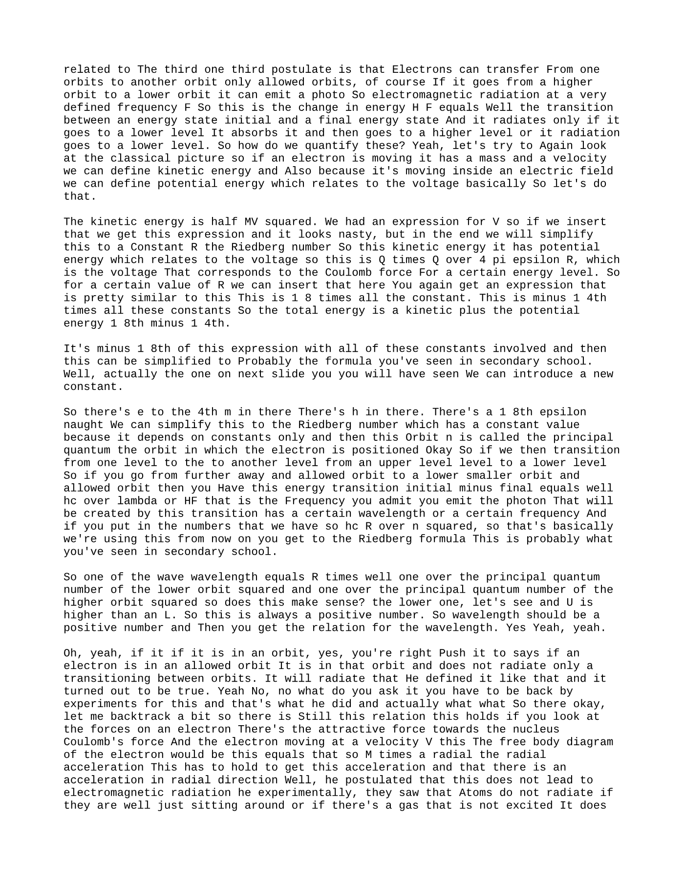
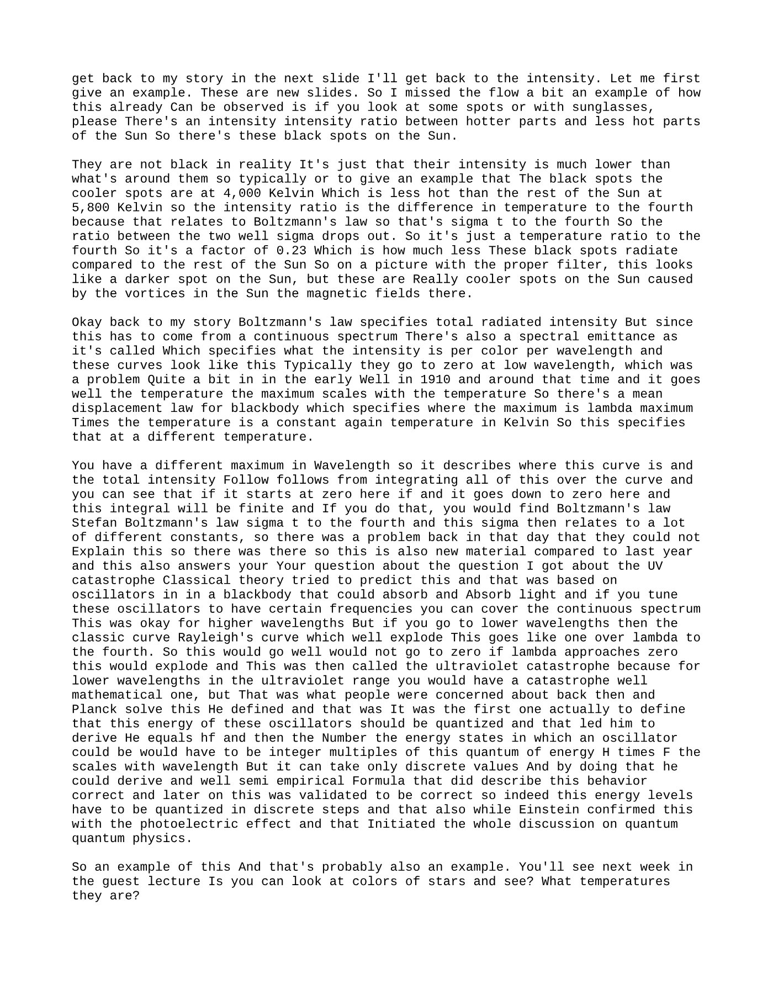
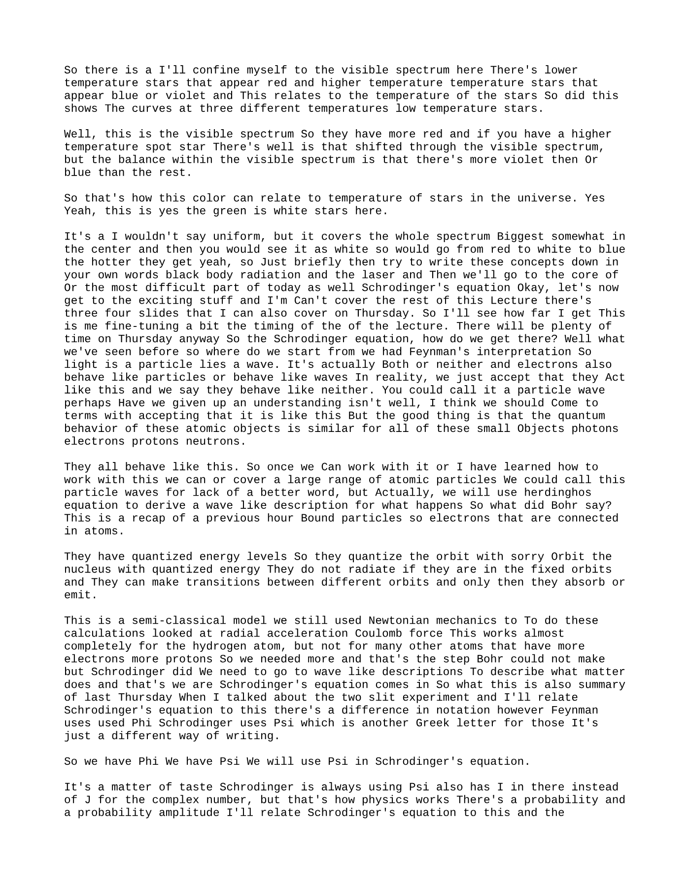
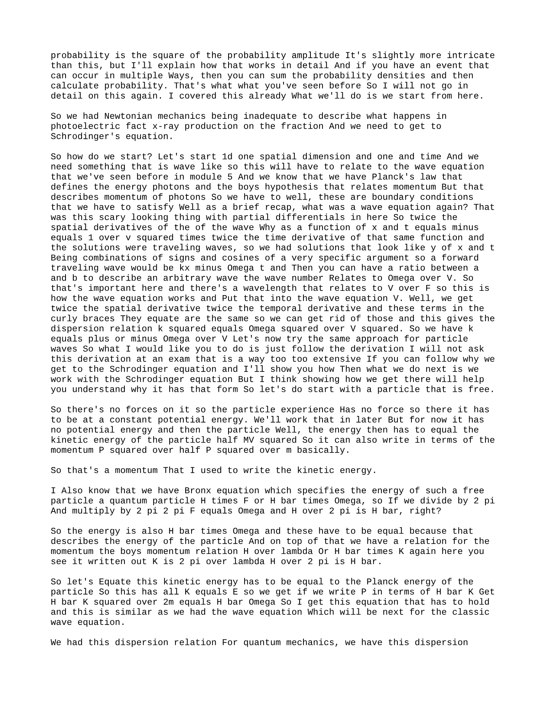
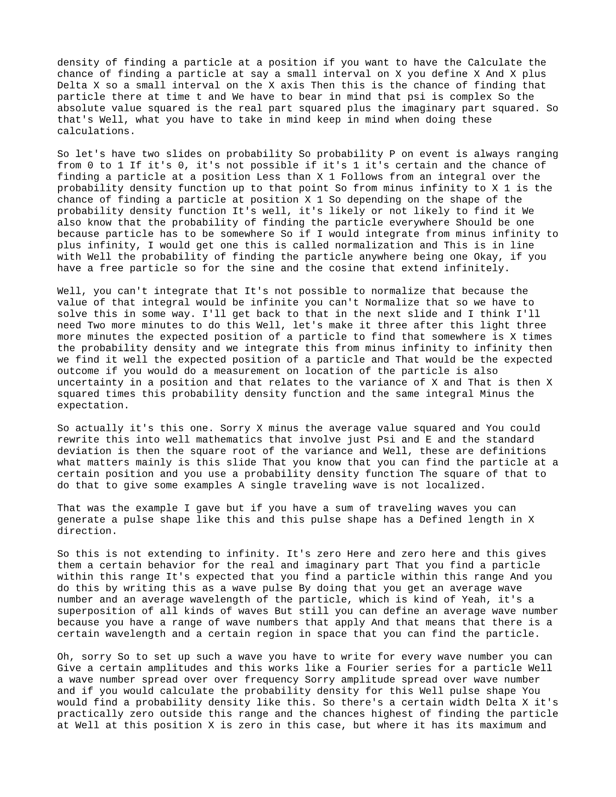

Summary
Good morning Welcome back to the last week of lectures for this course next week on Monday We will have exam practice and a guest lecture by the colleague of ours of mine actually north yours Who’s working on space applications? So I’ll put an announcement on that on campus Things we’ll cover today
Knowledge tree
- No knowledge topics were extracted.
Source material
Lecture Overview
Good morning. Welcome back to the last week of lectures for this course.
Next Week
- Monday: Exam practice.
- Guest lecture: By a colleague working on space applications.
- Announcement: Will be posted on Campus.
- Relevance: Things covered today are also relevant for that guest lecture.
- Space example: There will be a space example in today’s lecture.
Today’s Topic
- Lecture theme: Second lecture on quantum physics.
- Change from last year: The material has been expanded.
- Reason: Last year, a cyber attack at the end of Q2 caused TU/e to shut down everything for one week.
- Consequence last year:
- Q2 was extended by one week.
- Q3 was shortened by one week.
- Everything had to fit into seven weeks.
- There were six and a half weeks of content plus one lecture for exam practice.
- This year: There are seven weeks of content, with more background added.
- Pace: The material can be covered at an easier pace.
Exam-Style Question
This was a multiple-choice question from an exam two years ago.
Setup
You should now be able to answer it. Think about it first, then solve it. You may need:
- Back-of-the-envelope calculations
- Formula sheet
Key Physics Relations
What was shown last Thursday:
- Particles with mass can have momentum.
- Particles without mass, like photons, can also have momentum.
For particles with mass:
- Momentum: ( p = mv )
- Also: ( p = \frac{h}{\lambda} )
For particles without mass:
- Photons: Only ( p = \frac{h}{\lambda} ) holds.
Here we are talking about electrons and protons, so particles with mass.
Same-Speed Condition
If the proton and electron have the same speed, write:
[ v = \frac{h}{m\lambda} ]
So for the proton and electron:
[ \frac{h}{m_p \lambda_p} = \frac{h}{m_e \lambda_e} ]
Since ( h ) is the same throughout:
[ m_p \lambda_p = m_e \lambda_e ]
So the proton wavelength is:
[ \lambda_p = \frac{m_e}{m_p}\lambda_e ]
And since:
[ \frac{m_e}{m_p} = \frac{1}{1836} ]
we get:
[ \lambda_p = \frac{1}{1836}\lambda_e ]
- Correct answer: E
Variations
There are many versions of this question:
- Same speed: Gives one ratio.
- Same momentum: Gives a different ratio.
- Same wavelength: Another variation.
Momentum scales with mass, so the exact wording matters.
Recap of Last Thursday
Topics Covered
- Photoelectric effect
- X-ray production
- Compton scattering
- Wave-particle duality
- Feynman’s interpretation
- Uncertainty principle
These were all effects that could not be explained using the classical view of waves alone, so a particle interpretation was needed.
Today
Today builds on that foundation.
Lecture Scope
Today mainly covers:
- Chapter 39
- First section of Chapter 40
A significant amount of time will be spent on:
- How the wave function is introduced
- How Schrödinger’s equation is derived
The first part is easier going. The more difficult part is in the second lecture hour. On Thursday, everything will be wrapped up.
de Broglie Wavelength and Planck Relation
de Broglie Relation
The formula shown earlier is the de Broglie wavelength:
[ p = \frac{h}{\lambda} = \hbar k ]
where:
- ( \hbar ): ( \frac{h}{2\pi} )
- ( k ): Wave number
This applies to particles with mass, assuming:
- speeds are well below the speed of light,
- relativistic corrections are not needed,
- rest mass is effectively the particle mass.
Schrödinger’s equation uses ( \hbar ) because of the scaling factor.
Planck’s Relation
Planck’s relation states:
- Energy is quantized
- Energy is related to frequency
[ E = hf ]
So:
- Planck’s constant times frequency gives the energy of a photon.
This helped Niels Bohr develop his atomic model, an important intermediate step toward modern quantum theory and wave functions.
Why Classical Physics Failed
Photoelectric Effect
To explain the photoelectric effect:
- Light hits a metal.
- An electron can be emitted.
- This happens if the photon has enough energy to overcome the binding energy of electrons in the lattice.
Dual Nature
- Photons behave like both waves and particles.
- Electrons also behave like waves and particles.
You do not use both explanations at the same time:
- Wave interpretation: Needed for interference and diffraction.
- Particle interpretation: Needed for collisions.
Depending on the effect, one interpretation is more useful than the other.
Atom: Modern View
What we know now:
- An atom is the smallest unit of an element that still has the properties of that element.
- It consists of:
- a small, dense, charged nucleus
- protons and neutrons in the nucleus
- a system of electrons around it
Not “shells” in a simplistic sense, but a system describing where electrons are.
Spectra of Gases
Experimental Observation
By shining light through a gas:
- The input light has a continuous spectrum.
- The gas absorbs some light and re-emits it.
- You can measure:
- emission spectrum
- absorption spectrum
Emission Spectrum
The gas emits light at discrete wavelengths:
- specific lines at distinct colors
- a characteristic signature of the gas
Absorption Spectrum
The transmitted light contains:
- everything except the wavelengths absorbed by the gas
So:
- Emission lines: Bright lines at discrete wavelengths
- Absorption lines: Dark lines where light was absorbed
Role of Diffraction Gratings
To better distinguish spectral lines:
- A diffraction grating is used.
- It spreads out the spectrum over a screen or detector.
- This makes wavelengths easier to measure.
For a continuous spectrum:
- diffraction spreads all colors continuously.
For a gas:
- discrete spectral lines become easier to observe.
Key Idea
Each gas has a specific spectral signature.
Hydrogen was the gas studied most intensively around 1900-1910, but the same general principle holds for all gases.
The horizontal axis may also be read as:
- photon energy
- or ( \frac{hc}{\lambda} )
- or inverse wavelength
Early Atomic Models
Thomson Model
Before Rutherford, the best atomic model was Thomson’s model:
- Atom is a small sphere of radius about (10^{-10},\text{m}) or 0.1 nm
- The sphere is generally positively charged
- Electrons are embedded throughout it
Analogy:
- Like nuts or raisins in a cake
They also knew:
- all atoms except hydrogen had more than one electron
- there was some knowledge of total positive and negative charge
- but not much beyond that
Spectral-Line Explanation in Thomson Model
This model explained absorption lines by imagining:
- electrons oscillating around equilibrium positions
- if excited at their natural frequency, they could absorb energy
This was like a harmonic oscillator or resonant system.
Rutherford Scattering Experiment
Experiment
Rutherford used:
- alpha particles (helium nuclei: two protons and two neutrons)
- a thin gold foil
He wanted to test Thomson’s model.
What Was Expected
If Thomson’s model were correct:
- alpha particles should be deflected only slightly
- they would veer off at small angles
What Was Observed
Most alpha particles passed through the foil, but:
- some scattered at significant angles
- some even scattered backward toward the source
This was shocking and could not be explained by Thomson’s model.
Interpretation
The only way to explain this was:
- the positive charge of the atom is concentrated in a much smaller region
- electric fields near that region are much stronger
- because electric field scales like:
[ \frac{1}{r^2} ]
So if the positive charge is packed into a tiny volume:
- alpha particles passing close by feel a very strong repulsive force
- large-angle scattering becomes possible
Conclusion
Rutherford concluded that:
- the positive charge is concentrated in a tiny central nucleus
- the nucleus contains almost all the positive charge
- it also contains most of the atom’s mass
Estimated size:
- of order (10^{-14},\text{m})
This is about four orders of magnitude smaller than the whole atom.
Problem After Rutherford
Rutherford’s model still had a major problem.
Electron Orbits
He suggested electrons revolve around the nucleus in orbits.
But circular motion requires:
- radial acceleration
And accelerated charges:
- radiate electromagnetic waves
So orbiting electrons should:
- continuously radiate energy
- lose energy
- spiral inward
- increase speed
- radiate at higher frequency and smaller wavelength
But atoms do not continuously radiate.
This is the problem Bohr tried to solve.
Bohr Model of the Atom
What Was Known
They knew:
- heated atoms emit light in discrete spectral lines
- transitions occur at discrete frequencies and wavelengths
- photons have defined energy
- atoms can move between energy states by absorbing or emitting photons
Bohr’s Main Postulates
Bohr proposed:
1. Quantized Energy Levels
- The atom can only have certain allowed energy levels.
- Energy is quantized, not arbitrary.
2. Allowed Orbits
For hydrogen in particular:
- electrons move in specific orbits only if the orbit length contains an integer number of wavelengths
So the electron wavelength must “fit” the orbit.
3. Quantized Angular Momentum
For circular motion, angular momentum is:
[ L = r \times p ]
For magnitude in circular motion:
[ L = mvr ]
Bohr postulated:
[ L = n\hbar ]
for ( n = 1,2,3,\dots )
This means the angular momentum is quantized.
Connection to de Broglie Wavelength
Using:
[ p = \frac{h}{\lambda} ]
the condition becomes equivalent to saying:
[ 2\pi r = n\lambda ]
So the circumference must equal an integer number of wavelengths.
Stable Orbits
Bohr also postulated:
- if an electron is in an allowed orbit, it does not radiate
Only when it transitions between allowed orbits:
- it can emit or absorb radiation
These stable orbits are therefore non-radiating states.
Bohr Model Calculations
Forces in a Stable Orbit
The Coulomb force between proton and electron is:
[ \frac{e^2}{4\pi\epsilon_0 r^2} ]
This must equal the centripetal force:
[ m\frac{v^2}{r} ]
So:
[ \frac{e^2}{4\pi\epsilon_0 r^2} = m\frac{v^2}{r} ]
Using quantized angular momentum:
[ mvr = n\hbar ]
you can solve for:
- allowed velocities
- allowed radii
Bohr Radius
The radius becomes:
[ r_n = n^2 a_0 ]
where:
- ( a_0 ) is the Bohr radius
[ a_0 = 5.3 \times 10^{-11},\text{m} ]
This is close to the correct size for hydrogen.
Energy Levels in the Bohr Model
Orbital Transitions
Electrons can move:
- from a higher orbit to a lower orbit → emit a photon
- from a lower orbit to a higher orbit → absorb a photon
The energy change is:
[ hf = E_i - E_f ]
or equivalently:
[ \frac{hc}{\lambda} = E_i - E_f ]
Kinetic and Potential Energy
For the electron:
- Kinetic energy: ( \frac{1}{2}mv^2 )
- Potential energy: electric potential energy
Adding them gives the total energy, which simplifies to the familiar hydrogen-energy formula:
[ E_n = -\frac{R}{n^2} ]
where ( R ) is related to the Rydberg constant.
Principal Quantum Number
The orbit number ( n ) is called the:
- principal quantum number
Rydberg Formula
For a transition from upper level ( n_u ) to lower level ( n_l ):
[ \frac{1}{\lambda} = R\left(\frac{1}{n_l^2} - \frac{1}{n_u^2}\right) ]
with ( n_u > n_l ), so the wavelength is positive.
This is the Rydberg formula often seen in secondary school.
Questions About Bohr’s Postulates
A question was raised:
- If the electron is orbiting, there is radial acceleration.
- Why does it not radiate?
Answer:
- Bohr postulated that electrons in allowed orbits do not radiate.
- This was motivated by experiment: atoms at rest do not continuously emit radiation.
- This had to be backed up by measurements, and it turned out to work for hydrogen.
Only transitions between allowed orbits lead to radiation.
Hydrogen Energy Levels and Spectral Series
For hydrogen:
- Lowest energy level is:
[ -13.6,\text{eV} ]
This is the ground state.
There are many series of emitted light:
- some in the visible
- some in the infrared
- some in the ultraviolet
So the theory applies to all electromagnetic radiation, not just visible light.
As ( n ) increases:
- the spacing between energy levels becomes smaller
- because of the ( \frac{1}{n^2} ) dependence
Relation to Gas Spectra
Question:
- How does this connect to the gas example?
Answer:
- If the gas is hydrogen, then its absorption lines correspond to transitions between hydrogen energy levels.
- For other gases, you get different lines because they have different energy levels.
- Hydrogen was most studied because it is the simplest atom:
- one proton
- one electron
Quiz Question on Excitation Energy
A common unit for atomic energy levels is the electron volt.
Correct conclusion:
- Answer C is correct.
It should be exactly 2.5 eV.
Important point:
- If you supply more energy than needed, the excess does not simply get dissipated while still producing the same transition.
- The excitation must match the energy gap exactly.
This is why absorption spectra have discrete lines.
Break
A 15-minute break followed.
Applications of Absorption and Emission
After the break, two applications were discussed:
- Laser
- Blackbody radiation
Laser
Basic Processes
Atoms can interact with light by:
- absorbing a photon and going to an excited state
- emitting a photon and returning to a lower state
Usually:
- an excited atom eventually returns to the ground state
- this may take nanoseconds or milliseconds
- spontaneous emission occurs in a random direction and phase
Stimulated Emission
If light of the right frequency shines on an excited atom:
- it can trigger the atom to emit its photon
- the emitted photon has:
- the same direction
- the same phase
- the same frequency
So:
- one incoming photon can lead to two outgoing photons
This is light amplification.
Laser Meaning
LASER stands for:
- Light Amplification by Stimulated Emission of Radiation
Laser Construction
A laser typically contains:
- a gas in a tube
- a fully reflective mirror on one side
- a partially reflective mirror on the other side
Inside the tube:
- light reflects back and forth
- more stimulated emission occurs
- coherent light builds up
- some light exits through the partially reflective mirror
Population Inversion
To make this work, you need:
- more atoms in the excited state than usual
This is called:
- population inversion
Metastable State
A metastable state is an excited state in which the atom stays longer than usual:
- typical spontaneous decay: nanoseconds
- metastable lifetime: around milliseconds
This longer lifetime makes stimulated emission more likely.
Laser Output
The result is:
- highly coherent
- nearly single-frequency
- monochromatic
- in-phase light
Blackbody Radiation
Continuous Spectra
Unlike gases, solids and dense media contain atoms packed close together.
In gases:
- atoms are relatively isolated
- line spectra appear
In continuous media:
- many interactions occur between atoms
- you get a continuous spectrum, not just discrete lines
Blackbody Definition
A blackbody is an idealized hot dense object that:
- absorbs radiation over a continuous range of frequencies
- also emits radiation over a continuous spectrum
A blackbody is an idealization, like:
- frictionless surfaces
- massless ropes
- ideal pulleys
It does not exist perfectly, but can be approximated well.
Example analogy:
- the center of the pupil looks black because little light comes out.
Stefan-Boltzmann Law
The total radiated intensity is:
[ I = \sigma T^4 ]
where:
- ( \sigma ): Stefan-Boltzmann constant
- ( T ): temperature in Kelvin
Important:
- use Kelvin, not Celsius
Sunspot Example
Dark spots on the Sun are not truly black:
- they are just cooler and therefore less intense
Example:
- cooler spot: (4000,\text{K})
- surrounding surface: (5800,\text{K})
Intensity ratio:
[ \left(\frac{4000}{5800}\right)^4 \approx 0.23 ]
So sunspots radiate only about 23% as much as surrounding regions.
These cooler spots are related to:
- vortices
- magnetic fields on the Sun
Spectral Distribution of Blackbody Radiation
Spectral Emittance
Since blackbody radiation is continuous, the intensity must be distributed over wavelength.
This is described by:
- spectral emittance
It gives the intensity per wavelength.
Shape of the Curve
Typical blackbody curves:
- go to zero at low wavelength
- rise to a maximum
- fall again at high wavelength
The location of the maximum depends on temperature.
Wien’s Displacement Law
The wavelength of maximum intensity satisfies:
[ \lambda_{\max} T = \text{constant} ]
Again:
- temperature must be in Kelvin
As temperature changes:
- the peak shifts in wavelength
Relation to Total Intensity
The total emitted intensity is the integral of the spectral-emittance curve.
Integrating the full curve gives:
- the Stefan-Boltzmann law
Ultraviolet Catastrophe and Planck’s Solution
Classical Failure
Classical theory tried to explain blackbody radiation using oscillators.
This worked at larger wavelengths, but at short wavelengths the classical prediction exploded.
The Rayleigh result scaled roughly like:
[ \frac{1}{\lambda^4} ]
So as ( \lambda \to 0 ):
- the predicted intensity diverged
- instead of going to zero
This was called the:
- ultraviolet catastrophe
Planck’s Fix
Planck solved this by proposing:
- the energy of oscillators is quantized
That is, energy comes in discrete chunks:
[ E = hf ]
Oscillators could only take integer multiples of this quantum.
With this assumption, Planck derived a formula that matched experiment.
This was the first major step toward quantum physics.
Einstein later reinforced this through:
- the photoelectric effect
Color and Temperature of Stars
An important application, also relevant to space, is using color to estimate stellar temperature.
Visible Spectrum Interpretation
- Cooler stars: Appear more red
- Hotter stars: Appear more blue or violet
- Intermediate stars: Can appear white
The visible balance changes because the blackbody spectrum shifts with temperature.
So:
- red → white → blue as stars get hotter
Transition to Schrödinger’s Equation
The lecture then moved to the most difficult part:
- Schrödinger’s equation
Some remaining slides would be continued on Thursday.
Starting Point for Quantum Mechanics
Feynman’s View
Light and matter behave in a way that is not fully captured by classical categories.
You can say:
- light behaves like a wave
- light behaves like a particle
- electrons also behave like waves and particles
But really:
- they are both or neither
- we simply accept that quantum objects behave this way
This applies broadly to:
- photons
- electrons
- protons
- neutrons
A possible phrase is:
- particle-waves
Bohr as a Semi-Classical Model
Bohr’s model said:
- bound particles have quantized energy levels
- electrons in fixed orbits do not radiate
- transitions between orbits involve absorption or emission
But Bohr still used:
- Newtonian mechanics
- Coulomb force
- radial acceleration
This works very well for hydrogen, but not for many-electron atoms.
A more complete theory was needed.
Probability Amplitudes
Previously, in the two-slit experiment, probability amplitudes were discussed.
Feynman used:
- ( \phi )
Schrödinger uses:
- ( \psi )
It is just a different notation.
Key idea:
- Probability is related to the square of the probability amplitude
If an event can occur in multiple ways:
- first combine amplitudes
- then compute probability
Deriving Schrödinger’s Equation
Goal
We want a wave-like equation for matter:
- one spatial dimension (x)
- time (t)
It should connect to:
- wave behavior
- Planck’s law
- de Broglie momentum relation
Classical Wave Equation Reminder
The classical wave equation is:
[ \frac{\partial^2 y}{\partial x^2}
\frac{1}{v^2} \frac{\partial^2 y}{\partial t^2} ]
Its solutions are traveling waves such as:
- sine and cosine functions of (kx - \omega t)
From this comes the classical dispersion relation:
[ k^2 = \frac{\omega^2}{v^2} ]
so:
[ k = \pm \frac{\omega}{v} ]
Free Quantum Particle
Now consider a free particle:
- no forces
- constant potential energy
- total energy is kinetic energy
So:
[ E = \frac{1}{2}mv^2 = \frac{p^2}{2m} ]
Also:
- by Planck,
[ E = hf = \hbar \omega ]
- by de Broglie,
[ p = \frac{h}{\lambda} = \hbar k ]
Equating the two energy expressions:
[ \frac{(\hbar k)^2}{2m} = \hbar \omega ]
So the quantum dispersion relation is:
[ \frac{\hbar^2 k^2}{2m} = \hbar \omega ]
Unlike the classical wave equation:
- classical: ( \omega \propto k )
- quantum: ( \omega \propto k^2 )
This is why Schrödinger’s equation is a different kind of wave equation.
Assume a Wave Function
Let:
[ \psi(x,t) ]
describe the state of the particle.
Assume it has harmonic form, analogous to a wave:
[ \psi \sim \cos(kx-\omega t) + i\sin(kx-\omega t) ]
The derivation shows:
- two spatial derivatives produce a factor of ( -k^2 )
- one time derivative produces a factor of ( -\omega )
To match the quantum dispersion relation, the equation must have:
- second derivative in space
- first derivative in time
This leads to the 1D time-dependent Schrödinger equation for a free particle:
[ -\frac{\hbar^2}{2m}\frac{\partial^2 \psi}{\partial x^2}
i\hbar \frac{\partial \psi}{\partial t} ]
Complex Solutions
The derivation forces the appearance of the imaginary unit:
- ( i = \sqrt{-1} )
So wave functions are generally complex-valued.
Using Euler’s formula, the solution can be written as:
[ \psi(x,t) = Ae^{i(kx-\omega t)} ]
This is a complex exponential.
Interpreting the Wave Function
Why Complex Numbers?
Although the physical world appears real-valued, the wave function itself is complex.
That is not a problem because the measurable quantity is not ( \psi ) itself.
Probability Density
The key interpretation is:
[ |\psi(x,t)|^2 ]
This is the probability density of finding the particle at position (x) at time (t).
If you want the probability of finding the particle between:
- (x)
- (x + \Delta x)
then:
[ |\psi(x,t)|^2 \Delta x ]
gives that probability approximately.
Because ( \psi ) is complex:
[ |\psi|^2 = (\text{real part})^2 + (\text{imaginary part})^2 ]
Probability Concepts
Basic Properties
Probability always lies between:
- 0: impossible
- 1: certain
Probability Up to a Point
The probability of finding the particle somewhere to the left of (x_1) is:
[ \int_{-\infty}^{x_1} |\psi(x,t)|^2,dx ]
Normalization
The particle must exist somewhere, so:
[ \int_{-\infty}^{\infty} |\psi(x,t)|^2,dx = 1 ]
This is called:
- normalization
Why a Single Traveling Wave Is Inconvenient
A single free-particle wave like:
- sine or cosine extending over all space
is not localized.
That means:
- the particle could be anywhere from (-\infty) to (+\infty)
Such a wave function cannot be normalized properly in the usual sense.
So to describe a particle with some location, we need something better.
Wave Packets
Superposition
If we add together many traveling waves with different wave numbers, we can form a wave packet.
A wave packet:
- is localized in space
- has a finite width
- better describes where a particle may be found
Interpretation
In this case:
- the particle is most likely found where the packet is largest
- outside the packet, the probability is very small
So the wave packet shows both:
- particle-like behavior: localization in space
- wave-like behavior: built from oscillatory wave components
This is why quantum objects behave like both particle and wave.
Fourier Idea
Constructing a wave packet involves:
- combining many wave numbers with different amplitudes
This works like a Fourier expansion.
You can then define:
- an average wave number
- an average wavelength
Expectation Value and Uncertainty
Expected Position
The expected position is:
[ \langle x \rangle = \int_{-\infty}^{\infty} x |\psi(x,t)|^2,dx ]
This is the average result of many position measurements.
Position Uncertainty
There is also an uncertainty in position, related to the variance:
[ \Delta x^2 = \int_{-\infty}^{\infty} (x-\langle x\rangle)^2 |\psi(x,t)|^2,dx ]
and the standard deviation is the square root of that variance.
These definitions quantify how spread out the particle is in space.
Fourier Width and Uncertainty
A narrow function in wave-number space gives:
- a broad pulse in position space
A broad function in wave-number space gives:
- a narrow pulse in position space
This is a standard property of Fourier transforms.
So:
- narrow in one domain
- broad in the other
This is deeply connected to quantum uncertainty and would be discussed further on Thursday.
Summary of Today
Today’s lecture covered:
- Bohr model of the atom
- Laser
- Blackbody radiation
- Derivation of Schrödinger’s equation for a 1D particle
- Initial interpretation of the wave function
There was also:
- a studio classroom afterward
- explanation of the midterm test
- questions on Module 7
The lecture would continue on Thursday, especially the interpretation of Schrödinger’s equation and the remaining slides.
Final Logistics
- Please stay around for the pseudo classroom.
- Start time: in 15 minutes
- Actually: start at 10 to 11
Source snapshots













